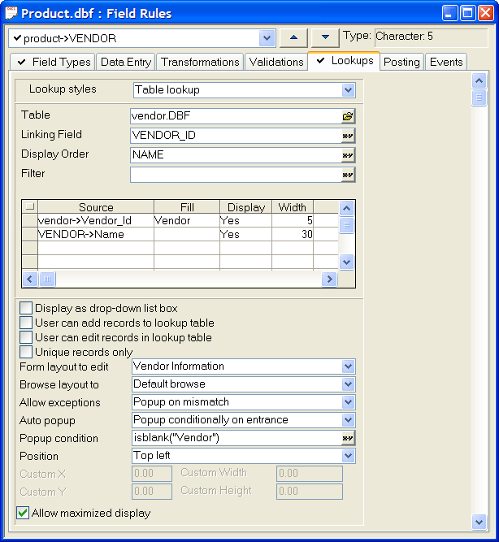
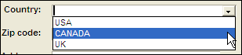

Lookups
When entering values in a Character, Numeric, or Date field, it is useful to choose a value from a list. For example, in a table of invoice items, you can use a Lookup to display a list of products from which to choose.

You can use a Lookup to display and insert values from either a pre-defined list (that you create in the Field Rules Editor ) or from a lookup table. The user selects a value to enter in the lookup field.

A Simple Lookup
By choosing entries from a list, instead of typing them manually, data entry is expedited and accuracy is ensured.
A selection from a lookup list can fill multiple fields in the current record.
 Note : Field Rule lookups
are not supported by grid or dialog components. In these applications,
you must define a DropDownBox
control and set its Choices
properties.
Note : Field Rule lookups
are not supported by grid or dialog components. In these applications,
you must define a DropDownBox
control and set its Choices
properties.
Select your table in the Table/Sets tab of the Control Panel.
Select Design > Field Rules.
Select the field from the drop-down list at the top left corner of the dialog.
Display the Lookups tab. Field types that support choices include the following:
Combo Box
List Box
Multi-state button
Tree Control
Drop Down Tree
Record List-List Box
Record List-Combo Box
Record List-Edit Combo Box
Two-state Button
Check Box
Field Select
File Select
Filter Builder
Order Builder
Select one of the five types of Lookup styles. The options are:
" Simple list " - use when you have a static list of options, such as gender.
" Cascading list " - use for a limited set of values that can be presented in a menu hierarchy
" Table lookup " - use for dynamic, high transaction volume applications where you need to associate records in the current table with a changing list of values in the lookup table.
" Conditional table lookup " - use for situations where you need a two-stage lookup. The first value selects the table. The second value generates the selection list.
" Previous values " - allows you to build a lookup list as you go. A good solution when you cannot anticipate the values that will go into the list.
See Also
Completing Several Fields, Displaying Selected Lookup Table Records (Filtered Lookups), Creating a Simple Lookup List, Creating a Cascading Lookup List, Creating a Table Lookup, Creating Conditional Table Lookups, Creating a Previous Values Lookup